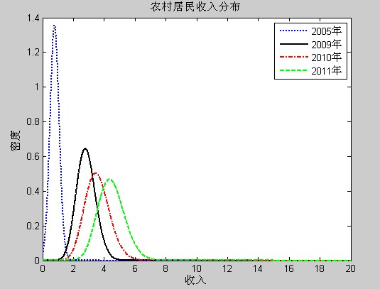
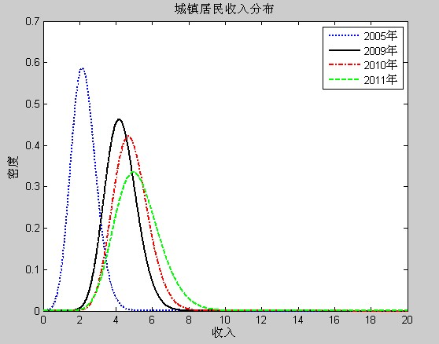
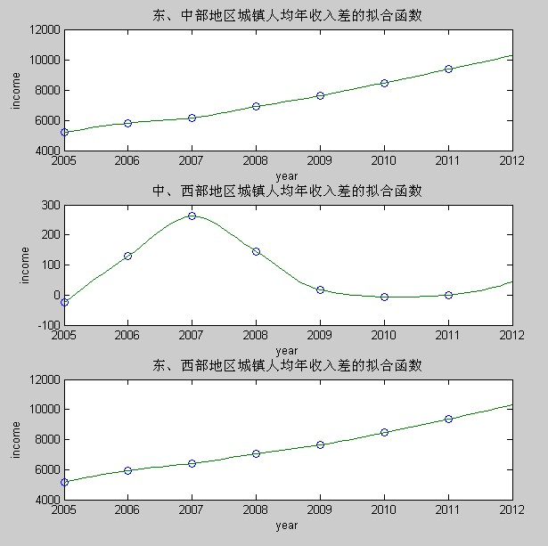

In Recent years, China’s income difference, especially the urban and rural difference and the regional difference, has been a country-wide focus.
Based on the maximum entropy distribution and least square fitting method, this paper formulates a density function of urban and rural income distribution respectively . According to the original survey data of two different types, we estimate the parameters of income distribution using Simulated Annealing Algorithm and Monte Carlo Method. By analyzing the distribution figures, we can draw the conclusion as follows. Since 2005, both urban and rural income has been upgraded prevalently with highly dispersion. The percentage of the high-income families is growing larger while that of the low-income families is growing smaller, and there’s no polarization tendency. We conclude that the difference between urban and rural income is definitely large through comparison.
Then, the Hermite interpolation was used to compare the urban and rural income difference among eastern, middle and western China. The results show that, for cities, average family income in eastern China is much higher than that in any other region, but that in middle and western China are becoming more and more congruent; for countries, the income difference between any two regions is broadening.
Hence, we conclude that the income difference between either city and country or different regions is extending.

Fig1: 2005、2009、2010、2011 Rural Income Distribution

Fig2: 2005、2009、2010、2011 Urban Income Distribution

Fig3: Urban Income Gap between Eastern, Middle and Western China
Fig4: Rural Income Gap between Eastern, Middle and Western China
［1］Ormoneit, D. and H. White, An Efficient Algorithm to Compute Maximum Entropy Densities. Econometric Reviews, 1999, Vol.18, No.2, 127-140.
［2］Aman Ullah, Uses of entropy and divergence measures for evaluating econometric approximations and inference. Journal of Econometrics, 2002, 107, 313 – 326.
［3］Ximing Wu. Calculation of maximum entropy densities with application to income distribution. Journal of Econometrics, 2003, 115, 347-354.
［4］王亚峰. 中国1985-2009年城乡居民收入分布的估计[J]. 数量经济技术经济研究，2012年第6期P61-73
If you have any question, please let me know jasminecsy1990 at gmail dot com